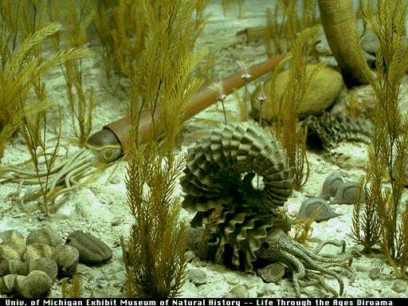
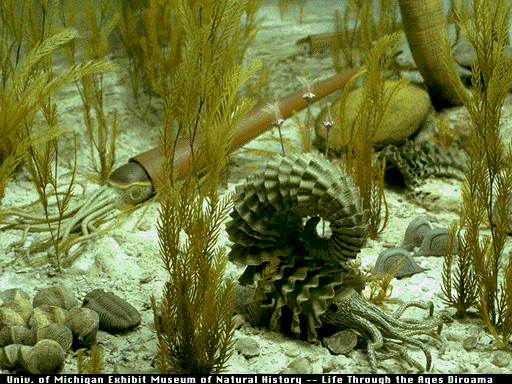
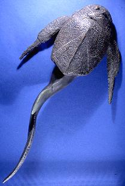
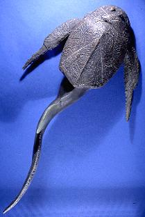
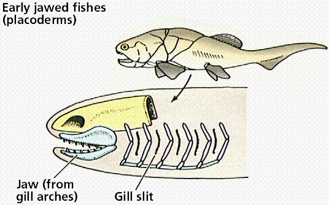
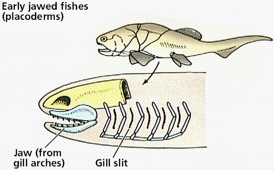
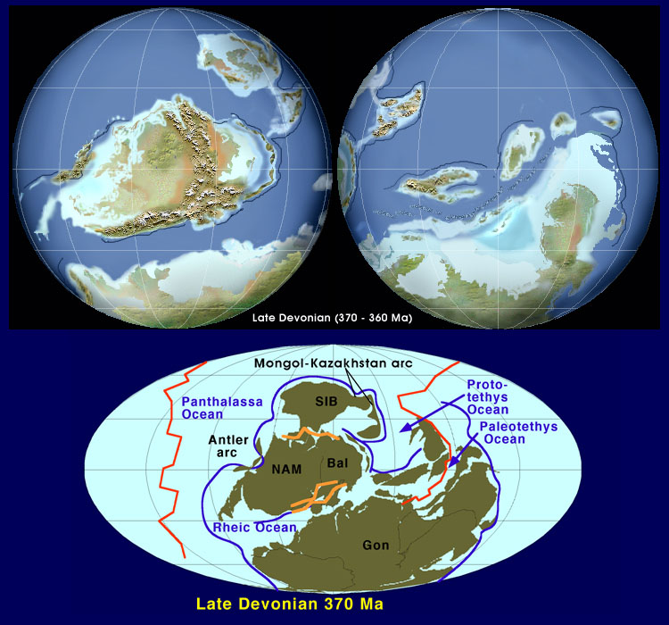
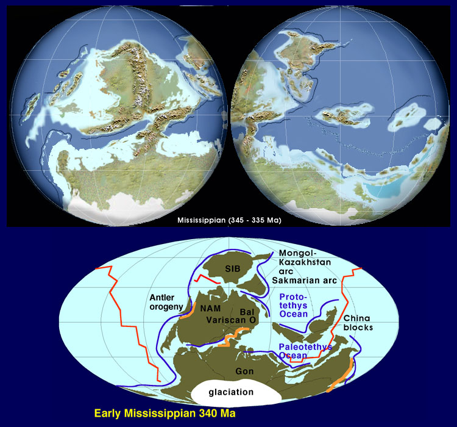

The Devonian | The Carboniferous: Coal Swamps and Glaciers | The Permian | The Great Permian Extinction
Learning Objectives | Terms | Review Questions | Links | References
The Paleozoic era literally translates as the "time of ancient life" and spans the time period between 544 and 245 million years ago. The Paleozoic is the first of three eras within the Phanerozoic eon (the time of visible life). While life originated during the Archean and increased in complexity during the earlier Proterozoic, the Paleozoic era is marked by the spread of animals with hard preservable parts such as shells and exoskeletons. This has led to what is popularly known as the Cambrian Explosion, the sudden appearance of a stupendous array of animal life, much of which is not closely related to modern forms. Despite extinctions at various times, the Paleozoic is notable for the increasing modernization of life. The late Paleozoic, the subject of this chapter, saw the spread of plant life over the land surface and the emergence and diversification of amphibians and their descendants the reptiles as dominant animal life on land. Diversification of fish, which began during the Silurian period continued unabated during the Devonian Period. By the end of the Paleozoic, almost all major groups of life, except the flowering plants and mammals, had developed. The Paleozoic ended in the greatest mass extinction event in world history. During this massive die-off nearly 95% of all marine species went extinct. The cause of this greatest catastrophe in Earth history has been much investigated and scientific consensus of its cause is emerging.
During the Paleozoic we see several major advances in life. The aformentioned Cambrian Explosion is the first. The evolution of plants from some group of green algae during the Ordovician is another, since these plants moved from water onto land, paving the way for vertebrate animals to follow. The first vertebrates, amphibians, were little more than legged fish, although their remote descendants would come to rule the land as reptiles, the first truly terrestrial vertebrates.
First appearances and relative diversity (width of shaded area) for major groups of animals. Image from Purves et al., Life: The Science of Biology, 4th Edition, by Sinauer Associates (www.sinauer.com) and WH Freeman (www.whfreeman.com), used with permission.

The fossil records of some protist and plant groups. The width of the shaded space is an indicator of the number of species. Image from Purves et al., Life: The Science of Biology, 4th Edition, by Sinauer Associates (www.sinauer.com) and WH Freeman (www.whfreeman.com), used with permission.
The Devonian period (410 to 360 million years ago) saw a continued diversifiaction of life on the land, including the first terrestrial vertebrates, the amphibians, and the first forests of trees. In the waters fish continued their diversification with the rise of the lobe-finned and ray-finned fish. Invertebrates such as crinoids, coral, and brachiopods thrived in shallow seas during the Devonian.
 

Reconstructions of Devonian life in the oceans.Top image: Biota of a typical Devonian coral reef. Middle image: Cladoselache fyleri, a 3-foot shark, was one of the top predators in the Devonian seas. Bottom image: The goniatite Goldringia is at center. Behind, the straight-shelled cephalopod Michelinoceras is can be seen. At front left, the trilobite Phacops is moving near a cluster of Paraspirifer brachiopods. Images from http://seaborg.nmu.edu/earth.
Brachiopods continued their diversification in the Devonian seas. One important group, the spiriferids, produced shells with elongated hinges, as seen in the image below. The Devonian marked the time of greatest brachiopod diversity, approximately 200 genera have been described.
Four specimens assigned to Mucrospirifer sp. from the Middle Devonian Silica Shale of Ohio. Image from http://www.extinctions.com, used with permission.
Rugose and tabulate coral continued to make major contributions to the formation of Devonian reefs. Crinoids and other echinoderms were prominent in many fossil assemblages.
Pachyphyllum nevadense magnum from the Martin Formation (Jerome Member) Devonian near Pine, Arizona. Image from http://www.extinctions.com, used with permission.
Cephalopods also underwent an increase in forms, notably the ammonoid group known as the goniatites. These coiled, chambered nautiloids left a great many fossils, some of which are quite aesthetically appealing.

Michelanoceras, assorted ammonites from the Devonian-aged Atlas Mountains Formation, Morocco. In this specimen the surrounding matrix has been cut away and the fossils cut to reveal the inner chambers. Image from http://www.extinctions.com, used with permission.
The ammonoids underwent three separate diversifications from a nautiloid-like stock. In each case the fold pattern of sutures became more complex. These sutire patterns are fantastic characters for identifying species, making ammonoids excellent index fossils. The first of these occurrences was the goniatites, a group that ranged from the Devonian to the Permian. The ceratites are a Triassic group, while the last group, the ammonites ranged from the Triassic to the Cretaceous. Ammonoids finally went extinct in the great end-of-the- Cretaceous extinction. Nautiloids are represented today by the Nautilus.
Comparison of the suture patterns of the goniatites, ceratites, and ammonites. Image from http://www.nhm.uio.no/palmus/galleri/montre/english/m_ammon_e.htm. Permission pending.
Animated GIF image of an anmmonoid, showing the relationship of the fossil to the presumed location of the living animal. Image from http://www.paleodirect.com/am201.htm.
The various fish groups that had appeared during the Silurian period (or in a few cases possibly even earlier) continued into the Devonian. The Devonian has been called the "Age of the Fishes" because oif the tremendous diversity of fish groups that evolved during this period of geologic time.
Small, jawless, and finless ostracoderms were the earliest vertebrates. They were filter feeders, but probably were also able to move water through their gills by muscular action. Ostracoderms have been found as fossils from the Cambrian through Devonian periods, when the group finally went extinct. Although extant jawless fishes lack protection, many early jawless fishes had large defensive head shields.
Model of an ostracoderm fish. Image from http://www.gpc.peachnet.edu/~pgore/geology/geo102/devonian.htm.
The first jawed fish were the Placoderms, an extinct group of Devonian-aged jawed fishes. Placoderms were armored with heavy plates and had strong jaws and paired pectoral and pelvic fins. Paired fins allow fish to balance and to maneuver well in water, which facilitate both predation and escape.
 
The fossil on the right is a cast of the placoderm, Bothriolepis, and is from http://www.toyen.uio.no/palmus/galleri/montre/english/x18.htm. The fossil on the left is a model of the placoderm Coccosteus and is from http://www.toyen.uio.no/palmus/galleri/montre/english/x19.htm.
The evolution of jaws is an example of evolutionary modification of existing structures to perform new functions. Jaws are modified gill arches, and allowed the exploitation of new roles in the habitats: predators with powerful jaws. There are two classes of jawed fish: the cartilaginous fish and the bony fish.
 

Steps in the evolution of jaws by modification of gill arches. Images from Purves et al., Life: The Science of Biology, 4th Edition, by Sinauer Associates (www.sinauer.com) and WH Freeman (www.whfreeman.com), used with permission.
The class Chondrichthyes contains approximately 850 species of skates, rays, and sharks. They have jaws, lots of teeth, paired fins, and a cartilage endoskeleton. Cartilaginous fish first appeared during the Devonian period and expanded in diversity during the Carboniferous and Permian before nearly disappearing during the great extinction that occurred near the end of the Permian. Some fragmentary evidence suggests cartilaginous fish were present during the Ordovician, although the best skeletal evidence is from the Devonian. Despite scanty skeletal presence (cartilage not preserving nearly so well as bone), shark teeth are common fossils in some deposits.
The crossopterygian fish (represented by the marine extant deep-living coelacanth and extinct freshwater forms) are regarded as ancestors of early amphibians. Extinct crossopterygians had strong fins, lungs, and a streamlined body capable of swimming as well as traveling short distances out of water.

Comparison of the skeletons of a crossopterygian lobe-finned fish and an early amphibian. Image from Purves et al., Life: The Science of Biology, 4th Edition, by Sinauer Associates (www.sinauer.com) and WH Freeman (www.whfreeman.com), used with permission.
One of the most famous fossil plant localities that formed during the Devonian is the Rhynie Chert from Scotland. This deposit is dated as early Devonian and records in fine detail cells of the earlier land vascular plants as well as other fossils. Paleogeographic recponstructions and other evidence suggest the environment was tropical to subtropical. Fossils from the Rynie Chert were buried in short-lived freshwater deposits that later were subjected to replacement of organic material with silica, forming a chert deposit that preserved in great detail the internal cells of the fossils. Fungi, including mycorrhizal fungi, also have been recovered from the Rhynie Chert, suggesting the symbiosis of plants and fungi is indeed long and essential. Fossils assignable to insects and crustaceans have also been recovered.
Rhynia is an early vascular plant. Like the Silurian plant Cooksonia, Rhynia lacked leaves and roots. One of the species formerly assigned to this genus, R. major, has since been reclassified as Aglaophyton major. Some paleobotanists consider A. major a bryophyte, however, it does have a separate free-living sporophyte that is more prominent than the gametophyte, but appears to lack lignified conducting cells. The remaining species, R. gwynne-vaughanii is an undoubted vascular plant.


Rhynia gwynne-vaughanii (L) stem cross section, from the Rhynie Chert in Scotland. Image cropped and reduced from http://www.uni-muenster.de/GeoPalaeontologie/Palaeo/Palbot/rhynie.html. (R) Reconstruction of the plant, from http://www.ucmp.berkeley.edu/IB181/VPL/Elp/Elp2.html.
The Rhynie chert is one of the most famous plant fossil localities in the world. This deposit has been of extrodinary historical and evolutionary importance in our understanding of early land plants and their environment. Several excellent web pages have been developed that describe plant, algal and fungal remains from the chert. Here, in the photo on the left, is a hand specimen of Rhynie chert showing numerous stem-like axes and other structures in various planes of section. On the right is a higher magnification view showing what this matrix looks like under low magnification. Image and text from http://lsvl.la.asu.edu/plb407/kpigg/rhyniechert.htm, used with permission by K.B. Pigg.

Reconstruction of Aglaophyton major (A-C) and Lyonophyton rhyniensis, another Rhynie Chert plant thought to be the gametophyte of Aglaophyton. Image from the UCMP Berkeley website.
The zosterophyllophytes were an important early Devonian group that is often mentioned as ancestral to the lycophytes. These plants had small leaf-like ennations that projected from the stems. Ennations are not considered to be leaves since they contain no vascular tissue as is found in leaves. Sporangia in this group were not located on the ends of stems, but rather along the sides of the stems, a feature also seen in lycophytes. Sawdonia, shown below, a leafless Devonian plant covered with spiny projections, is a member of this group.
Sawdonia is a member of the zosterophylls. This group is thought to have some relationship to the lycopods, either as lycopod ancestors or as their sister group. In this photo you can see the numerous spiny enations that typically cover the surface of these plants.. Image and text from http://lsvl.la.asu.edu/plb407/kpigg/sawdonia.htm, used by permission of K.B. Pigg.
The trimeophytes were larger plants of the early-middle Devonian. Some trimerophytes are thought ancestral to the sphenopsids and progymnosperms of the later Devonian. Unlike the rhyniophytes (such as Rhynia) and the zosterophyllophytes, trimerophytes did not produce equal (dichotomous) branches. Instead they branched in such a way that one branch appeared to be the central stem and the other a side shoot.
Psilophyton crenulatum, dissolved from its surrounding rock to reveal some of the three dimensional nature of the plant. These fossils were preserved in thick mats of plant remains and were studied in an interesting way. It was possible to put the whole rock into a vat of acid, dissolve the rock matrix and lift out individual plant fragments. These fragments were re-embedded in bioplastic. Both blocks (on the left and right) show several stem axes and, at the top, elongate paired sporangia on forked branching systems. Image and text from http://lsvl.la.asu.edu/plb407/kpigg/pcrenulatum.htm, used with permisson from K.B. Pigg.
Plants belonging to the division Lycophyta, have their sporangia organized into strobili (sing.: strobilus). Leaves that contained vascular tissue are another major advance for this group.

Proposed steps in the evolution of the microphyll leaf. Note that microphylls do not leave a leaf gap in the stem's vascular cylinder. If we wanted to place Psilotum-like plants on the left, we would have Lycopodium-like plants on the right. Image from Purves et al., Life: The Science of Biology, 4th Edition, by Sinauer Associates (www.sinauer.com) and WH Freeman (www.whfreeman.com), used with permission.
Drepanophycus is a middle Devonian lycophyte from the Northern Hemisphere. Its features are very similar to modern lycophytes. Sometimes this genus goes under the name Asteroxylon.

Reconstruction of Drepanophycus , a middle Devonian lycophyte. Note the numerous microphyll leaves, placement of sporangia on the upper surface of the sporophylls, and stem anatomy that are all consistent with modern lycophytes. Image from http://www.ucmp.berkeley.edu/IB181/VPL/Lyco/Lyco2.html.
Archaeosigillaria and Colpedoxylon are two Devonian lycopods known from areas in upstate New York. In contrast to most lycopods which typically have simple, unforked microphylls, these plants produce leaves with branching tips. Both Archaeosigillaria and Colpedoxylon have leaves that trifurcate, or have three-pointed tips. Unfortunately our material does not show these details very well. The most complex of these lycopods, Leclercqia, has five-forked leaves. These plants suggest that leaves may have arisen in lycopods both by enations and by planation of a branching system. On the left is Archaeosigillaria, and on the right, Colpedoxylon. Images and text from http://lsvl.la.asu.edu/plb407/kpigg/colpedoxylon.htm, used with permission of K.B. Pigg.
The major fossil groups of lycophytes are the lepidodendrids and sigillarids, often referred to as the arborescent lycopods because they usually were large trees. During the middle Devonian lycophytes retaind their herbaceous habit, but also began to grow taller, more than a few meters high at first, and developed the capability for secondary growth to produce wood, allowing the plants to grow still taller. Modern lycophytes lack secondary growth and are entirely herbaceous.
Once dominant elements in the Paleozoic forests, sphenophytes (also known as the equisetophytes) are today relegated to minor roles as stream-side herbaceous plants. The group is defined by their jointed stems, with many extremely small leaves being produced at a node, production of spores in cones borne at the tips of stems, and spores bearing elaters (devices to aid in spore dispersal). The fossil members of this group are often encountered in coal deposits of Carboniferous age in North America and Europe. The first sphenophytes show up during the late Devonian, most likely evolving from some group of the trimerophytes.
Ferns reproduce by spores from which the free-living bisexual gametophyte generation develops. There are 12,000 species of ferns today, although the fossil history of ferns shows them to have been a dominant plant group during the Paleozoic Era. The first ferns also appear by the end of the Devonian. Some anatomical similarities suggest that ferns and sphenophytes may have shared a common ancestor within the trimerophytes.
The progymnosperms are an extinct group of free-sporing (nonseed) plants that have fern-like leaves and reproductive structures attached to gymnosperm-like stems with large amounts of wood. Some progymnosperms produced a single type of spore (homospory) while otyhers produced small and large spores, a condition known as heterospory. This latter group may include the ancestors of seed plants.
The most famous oif the progymnosperms, Archaeopteris, was first assigned to the ferns. During the 1960s paleobotanist Charles B. Beck convincingly demonstrated that this common late Devonian leaf fossil was actually produced by the same plant that also produced a common Devonian petrified wood known as Callixylon.
Reconstruction of Archaeopteris (L) and the leaf fossil of the same plant (R). Images from http://www.mdgekko.com/devonian/neighborhood/plants/archaeopteris.html.
The seed ferns, fancy name pteridosperms (literally fern-seed), appeared during the late Devonian. One of the more important groups of seed ferns was the lyginopterids, small vine-like plants that probably grew on other plants. This group produced seeds in a cupule-like structure.
Perhaps the earliest animals ashore were the invertebrates, most likely groups of arthropods. The oldest known terrestrial arthropod is a trigonotarbid from the Silurian. Trigonotarbids superficially looked like spiders. The major groups of terrestrial arthropods were present during the Devonian: chelicerates including mites, spiders, and arachnids; and made the transition to land life, and uniramians including flightless insects, centipedes and millipedes.
The earliest terrestrial vertebrate fossils are from the late Devonian. These "stem tetrapods" as they are known, were essentially fish out of water. The late Devonian lungfish had two groups, the Dipnoi (which includes the living African, Auistralian, and South American lungfishes) and the Crossopterygii, whose sole living member is the coelacanth Latimeria. Comparison of the skull, forelimb, and tooth structure of Devonian crosspterygians such as Eusthenopteron with similar areas in a more specialized tetrapod such as Ichthyostega supports descent of amphibians from Devonian crossopterygians. However, some molecular studies point to descent of the amphibians from the lungfish, the Dipnoi.
Polish postage stamp honoring the crossopterygian fossil fish Eusthenopteron. Image from http://www.xs4all.be/~nautilus/gallery/filatelie/index1.html. (Wonder how they tasted with chips?)
Artist's rendition of Ichthyostega, a stem tetrapod that may be along the lineage leading to amphibians. Reproduced with permission. Illustration by Khristine Page (c) 1999 Exploratorium, www.exploratorium.edu.
The Devonian world was one of major changes, both in the biological realm and the geological one. The two large landmasses, Gondwana to the south and Laurasia to the north began moving toward the formation (again) of a world supercontinent, Pangaea. Mountain building events were occurring on the edges of each of these continents. On Laurasia, the collision of Eurpoe with Laurentia produced the beginnings of the Appalachian Mountains. Changes at the end of the Devonian brought an end to the time of extensive reef building.

Reconstruction of the late Devonian continents. Images from http://vishnu.glg.nau.edu/rcb/Late_Dev.jpg.
Near the end of the Devonian another mass extinction occurred. This one was more severe on marine creatures than on the newly established terrestrial forms. The corals were quite seriously decimated, and the return of extensive reef building did not happen until the Triassic with the evolution of a new group of reef-building corals, the scleractinians. Brachiopods, trilobites and primitive fish groups either were diminished or completely snuffed out by this extinction event.
Global cooling tied to Gondwanan glaciation has been proposed as the cause of the Devonian extinction, as it was also suspected of causing the terminal Ordovician extinction. Rocks in parts of Gondwana suggest a glacial event. The forms of marine life most affected by the extinction were the warm water to tropical ones. Another hypothesis for this extinction is that an asteroid impact caused a global cooling. There are several impact sites known to be of the right potential age to have been involved in this extinction. Neither hypothesis, glaciation or impact, is unequivocally supported by the available data.
The Carboniferous period (360 to 286 million years ago) in Europe is better known in North America as the Mississippian period and the Pennsylvanian period. The regression of the Mississippian seas from North America provided a natural break in deposition that was not echoed in Europe. In this segment the early (or lower) Carboniferous will equate to the Mississippian, and the late (or upper) Carboniferous will represent the Pennsylvanian.
The Carboniferous forests produced tremendous biomass which, when buried, eventually turned into massive coal deposits of the age. Image and text from http://seaborg.nmu.edu/earth/carbonif/car04b.html.
The Carboniferous takes its name from the widespread occurrence of coal deposits formed during this timespan in Europe and North America. Coal is a sedimentary rock composed of plant debris (and occasionally material from other creatues) that was deposited in abog or swamp that had little biological activity at its bottom. This led to preservation of the plant leaves, stems, pollen and other structures, although with continued burial these structures become much less distinct. Time and pressure combine with chemical changes to turn the plant material into coal. Fluctuating sea-levels during the Carboniferous contributed to the preservation of many coal environments.
The types of coal and the processes by which they form. Image from http://www.uky.edu/KGS/coal/webcoal/pages/coalkinds.html.
The marine environments, following the rebound from the late Devonian mass extinction underwent changes, with crinoids becoming more dominant and diverse. The early Carboniferous is sometimes known as the "age of crinoids". The primitive, armored Devonian fish were replaced by more "modern" ray-finned fish.
Fenestrate bryozoans were particularly common in the early Carboniferous seas. Archimedes, a corkscrew-shaped fossil, represents the secreted support of a colony of bryozoans that are usually no longer present. The so-called lacy bryozoans were among the first invertebrate groups to recover after the Devonian extinction.
Archimedes (bryozoan), an important index fossil for the late Carboniferous (Pennsylvanian). Image from http://www.mcs.drexel.edu/~crorres/Archimedes/Screw/bryozoa/bryozoa.html.
Brachiopods became increasingly important animals. The spiriferids that began their diversification during the Devonian quickly recovered from the Devonian die-off and resumed or increased their ecological dominance during the early Carboniferous.
Corals were much restricted after the Devonian crisis and the large reefs of the Devonian were replaced with smaller reefs known as patch reefs. The role of corals in these new reefs was much reduced from what it had been in earlier times. Crinoids were also important contributors to the building of these small reefs, as were blastoids, a similar group of echinoderms.
Forminiferans, a group of unicellular protozoans that date from the Cambrian, developed a new series of forms with calcareous and porcellaneous tests (foram "shells" are technically known as tests). The fusulinids were a large group of foraminiferans that reached sizes of several centimeters in length. The fusulinids were very important during the Permian before their extinction at that period's close.
Sharks and bony fish continued to diversify during the good times of the early Carboniferous, before the dropping sea levels of the late Carboniferous caused loss of habitat. The earliest bony fish to dominate the aquatic environment were the palaeoniscoids, a group that raged in time from the Carboniferous to the Triassic. Palaeoniscoids somewhat resembled modern bony fish but had significant anatomical differences with modern fish, which belong to a later-evolved group. The palaeoniscoids were extinct by the end of the Mesozoic era. Sturgeon are members of a distantly related group to the palaeoniscoids. Sturgeon have a cartilage skeleton and thus a poor fossil record.
The Lycophytes became even more significant elements of the world's flora during the Carboniferous. These non-seed plants evolved into trees in the fossil genera Lepidodendron and Sigillaria, with heights reaching up to 40 meters and 20-30 meters respectively. Lepidodendron trunks can be over 1 meter in diameter. However, the stems are composed of less wood (secondary xylem) that usually is found in gymnosperm and angiosperm trees.
We know much about the anatomy of these coal-age lycopods because of an odd type of preservation known as a coal ball. Coal balls can be peeled and the plants that are anatomically preserved within them laboriously studied to learn the details of cell structure of these coal age plants. Additionally, we have some exceptional petrifactions and compressions that reveal different layers of the plants' structure. Estimates place the bulk, up to 70%, of coal material as being derived from lycophytes.
Lepidodendron was a heterosporous tree common in coal swamps. As with many large plant fossils, one rarely if ever finds the entire tree preserved intact. Consequently there are a number of fossil plant genera that are "organ taxa" and represent only the leaves (such as Lepidophylloides), reproductive structures (Lepidostrobus), stem (Lepidodendron), spores (Lycospora), and roots (Stigmaria). Lepidodendron had leaves borne spirally on branches that dichotomously forked, with roots also arising spirally from the stigmarian axes, and both small (microspores) and large (megaspores) formed in strobili (a loose type of soft cone). Taylor and Taylor (1993) note that Lepidodendron reached nearly 40 meters in height, with trunks nearly 2 meters in diameter. The trees branched extensively and produced a large number of leaves. that, when they fell from the branches, produced the characteristic leaf scars of the genus.
External stem features typical of arborescent lycopods, collectively called lepidodendrids, based on the diamond-shaped "snakeskin" type pattern produced by the helically arranged leaf cushions. On the left is a lower magnification view of this type of pattern, showing the general features of many of these trees. Each leaf abscissed, so that if you are looking, as you are here, at the outside of the stem, you can see a characteristic appearance. On the right is a higher magnification photo showing details of leaf cushions. Each diamond shaped cushion has a smaller central area called the leaf base where the leaf attached. In the center of the leaf base you can see the leaf trace, or vein to the leaf. The vertical stripe running down each cushion is probably the result of increased girth from secondary cortical growth inside the stem. Images and text from http://lsvl.la.asu.edu/plb407/kpigg/lepidodendrid.htm, used with permission of K.B. Pigg.
Cross section through a branch (approximately an inch in diameter) of a large lepidodendrid tree. In the very center is a pith, surrounded by primary xylem and a small fringe of secondary xylem [wood, MJF]. Then there is black gunk and an open white area. Phloem and innermost cortical tissues are typically not well preserved, and this black gunk and white areas probably represent their positions in the branch. The outermost part of the stem is gone. Images and text from http://lsvl.la.asu.edu/plb407/kpigg/lepidostemxs.htm, used with permission of K.B. Pigg.
Lepidodendron was a large Carboniferous tree reaching heights of 100 feet. When the plant's leaves fell they left diamond-shaped scars arranged in oblique rows around the stem. Image and text from http://seaborg.nmu.edu/earth/carbonif/car01b.html. Note the ferns and sphenopsids growing around the fallen Lepidodendron trunk, and a large calamite tree in the right foreground.
Sigillaria was another arborescent lycopod, and is also common in coals-age deposits. In contrast to the spirally borne leaves of Lepidodendron, Sigillaria had leaved arranged in vertical rows along the stem.
Like the lycophytes, the sphenophytes reached their zenith during the Carboniferous and have declined to but a single genus, Equisetum, surviving today. The largest of the sphenophytes were trees placed in the genus Calamites. Numerous leaf fossils, such as the specimen of Annularia shown below, have been associated with these trees, as have reproductive cones. Smaller shrubby plants were in the genus Sphenophyllum.
Sphenophyllum leaves of a late Cambrian sphenopsid from the Coal Deposits of France. Image from http://www.extinctions.com, used with permission.

Annularia stellata, a small stem of a Carboniferous calamite from the Coal Deposits of France. Image from http://www.extinctions.com, used with permission.
Ferns were well represented in the coal swamps. Numerous fern leaf fossils have been found, often the mode of preservation makes for striking fossils. Ferns ranged from small, shrubby forms similar to those we see in many places today, to tree-ferns, such as the Paleozoic genus Psaronius.
Pecopteris sp. is the foliage of a tree fern. Pecopteris grew on Psaronius which was one of the most common fossil tree ferns. Psaronius reached height of about ten meters (32 feet) and resembled a modern palm tree. Although common througout much of the late Paleozoic, this plant was most abundant in the Late Pennsylvanian and Permian. Their increasing abundance reflects changing climates at the close of the Paleozoic and may be related to an increase in drier habitats. Image and text from http://www.museum.state.il.us/exhibits/mazon_creek/pecopteris.html, used with permission.
The seed ferns underwent increases in diversity during the Carboniferous. Often the isolated leaf fossils are difficult to distinguish between ferns and seed ferns. Often seed ferns had the leaf fossil known as Neuropteris associated with the seeds.
Neuropteris sp. is the name given to the foliage of a seed fern. Seed ferns (Pteridospermales) are an extinct group of gymnosperms. Although their foliage resembled that of modern ferns, they reproduced by means of seeds. Modern ferns reproduce by means of spores. Image and text from http://www.museum.state.il.us/exhibits/mazon_creek/neuropteris.html, used by permission.
Other seed fern groups that characterized the Carboniferous include the medullosans and the cordaitaleans. During the late Carboniferous the voltzialean seed ferns appear. This latter group is considered by paleobotanists to be closest to the gymnosperms. Cycads, a now-minor group of gymnosperms but major components of the world's floras during the Mesozoic, appeared during the Carboniferous.
Specimens of Cordaites, the name-bearer for the cordaitaleans, were large trees with strap-shaped, leathery leaves that often had parallel leaf veins. The cordaites had their reproductive structures and seeds arranged in cones. The cordaites had a number of growth forms and several different types of woody tissues have been observed in cordaite wood. The cordaites have been interpreted as growing in an environment like the modern bald cypress swamp.
The major animals on land during the Carboniferous were the amphibians (and their descendants such as the stem reptiles) and insects. Dragonfly fossils have been found with wingspans up to 75 cm.
With climate changes occurring during the late Carboniferous, the plants changed, as did the terrestrial animals. Glaciation in Gondwana has been blamed for this chanmge. One response that tetrapods made was to develop the amniotic egg. With the egg and resulting freedom from water for reproduction (to which amphibians to this day must return to lay their eggs) reptiles (sometimes known as stem-reptiles, could exploit drier environments further from water.
Hylonomus was one of the earliest reptiles. This quadrupedal (four-legged) stem reptile ate insects (which were prolific in the coal swamps). From this group of early reptiles evolved the pelycosaurs, the great reptiles of the Carboniferous-Permian times, and posibly the bipedal thecodonts of the permian-Triassic. Pelycosaurs included both herbivorous and carnovorous species. The group was characterized by an elaborate fin or sail on their back.
The Carboniferous, at least as seen in North American deposits, is really two distinct sets of condiions: marine dominated early Carboniferous environments charactrized by shallow seas, followed in time by terrestrial "coal-swamp" environments of the late Carboniferous. The supercontinent of Pangaea was assembled during this time, causing the uplift of seafloor as continental land masses collided to build the Appalachian and other mountains.

Reconstruction of the early Carboniferous (Mississippian) continents. Images from http://vishnu.glg.nau.edu/rcb/Miss.jpg
Reconstruction of the late Carboniferous (Pennsylvanian) continents. Images from http://vishnu.glg.nau.edu/rcb/Penn.jpg.
Glaciation in Gondwana during the late Carboniferous time contributed to decline in marine environments and fluctuating sealevels that alternately formed and destroyed coastal coal swamp environments. There appears to have been no mass extinction associated with this glaciation, unlike the Devonian mass extinction.
The Permian period spanned the time interval from 286 to 245 million years ago. During the Permian the assembly of Pangaea was completed and a whole host of new groups of organisms evolved. The Permian ended in the greatest of the mass extinctions, where over 90% of all species were extinguished. With the assembly of pangaea and resulting mountain building, many of the shallow seas retreated from the continents.
The fusulinid foraminiferans that had appeard during the Carboniferous continued their diversification. Trilobites were rarely encountered, although brachiopods and crinoids had some recovery of species diversity after the Carboniferous extinction. Marine environments were much restructed due to the Pangaea-related tectonism and resulting uplift of the the supercontinent.
Reconstruction of the seafloor near a Permian coast. Image from http://seaborg.nmu.edu/earth/permian/per12b.html.
Rock containing some fossil fusulinids (the lighter gray colored structures). Image from http://palaeo.gly.bris.ac.uk/Palaeofiles/Permian/fusilina.html.
At first glance it might appear that the only evolutionary changes of note were occurring on the land during the Permian. Part of this illusion results from the relative scarcity of Permian-aged marine sediments as well as the tendency of land-dwellers to view themselves as the pinacle of evolution.

A Permian [terrestrial] scene. Two Dimetrodon stroll past a pool with an emerging Eryops. The trees on the left are Calamites. Image and caption from http://seaborg.nmu.edu/earth/permian/per01b.html.
Dimetrodon and lunch! Image from http://www.elykish.com/Gallery/Dinosaurs/overview.htm, used with permission of Ely Kish.
Plant life of the Permian took on an increasingly modern "look" with the rise of a number of gymnosperm (naked seeded) plants during the late Carboniferous and their diversification during the Permian. Indeed, the late Carboniferous "extinction" is almost inapplicable to terrestrial plants. The arborescent lycopds of the carboniferous coal swamps disappeared before the end of that period. The Permian saw the spread of conifers and cycads, two groups that would dominate the floras of the world until the Cretaceous period with the rise of the flowering plants. The first conifers had small leaves similar to those seen in the modern plant Auracaria, the Norfolk Island pine.
Paleobotany of the Permian is also marked by an interesting group of seed ferns completely restricted to Gondwana, the southern parts of Pangaea. This group, the glossopterids, produced a distinctive leaf type (classified under the leaf-genus Glossopteris) as well as a unique, striated, bisaccate pollen type. Glossopteris and its associated plant organs have been found all over the former parts of Gondwana, the present continents of India, Australia, Africa, South America and Antarctica. Seeds of Glossopteris have been studied with computer simulations and found too large to have travelled tyhe thousands of miles of open ocean between Africa and South America. When Alfred Wegener proposed his continental drift hypothesis in 1912 he used fossil evidence like Glossopteris and its distribution to argue for the former exstence of a supoer continent he termed Pangaea. When the bodies of the ill-fated British expedition to the South Pole led by Captain Scott were found in Antarctica, leaf fossils belonging to Glossopteris were in the tents.
Glossopteris leaf fossils from Australia are more than 250 million years old. Image from http://researchmag.asu.edu/stories/crunchy.html.
Reconstruction of Gondwana is supported by the distribution of various fossils, such as the plant fossil Glossopteris. Image from http://pubs.usgs.gov/publications/text/continents.html.
The amniote lineage (the first truly terrestrial vertebrates that did not need to return to water to lay eggs), especially the fossils, often are classified based on the number of openings in the skulls. These openings allow for muscle attachment and have traditionally been used to separate the "reptiles" into several groups, including the anapsids, synapsids, and diapsids. The anapsids, which include the turtles, lack any openings. Synapsids include the mammals and their predecesssor and related groups the pelycosaur (the non-mammalian synapsids). Diapsids, with two openings on each side of their skulls, include the birds, dinosaurs, and most of the traditional reptile groups. The synapsids used to be called the mammal-like reptiles. Recent studies suggest that many animals in this group were not so strongly reptilian (such as ectothermy) as the obsolete term "mammal-like reptiles" implied.
The amniotes that had appeared during the late Carboniferous diversified from the protothyrid stock along two lineages: one leading to the quadrupedal pelycosaurs (stem synapsids) of the Carboniferous-Permian and then to the therapsids (advanced synapsids) of the Permian-Triassic; and the other leading to the bipedal thecodonts of the Permian-Triassic. Dimetrodon, shown above, was a member of the pelycosaurs, or non-mammalian therapsids. By the end of the Permian the therapsids had developed, a group possibly characterized by some degree of endothermy (warm-bloodedness). The early mammals of the Triassic period are possibly an offshoot or descendant group of the therapsids.
The Permian is geologically marked by the final assembly of Pangaea, glaciation in the souther extreme of Gondwana, and the greatest mass extinction in Earth history that occurred at the close of the Permian. The Permian world was marked by a nearly pole-to-pole supercontinent, Pangaea, that was surrounded by Panthalassa, the world sea. A small ocean, Tethys (today represented by the Mediterranean Sea) was also present.
Reconstruction of the Permian continents as they constituted Pangaea. Images from http://vishnu.glg.nau.edu/rcb/Perm.jpg
The end of the Permian, also the end of the Paleozoic era, was marked by the greatest extinction of the Phanerozoic eon. Despite its magnitude, the terminal Permian extinction has not received the amount of publicity or research that the more famous, but lesser, terminal Cretaceous extinction has. During the Permian extinction event, whose causes remain controversial, over 95% of marine species went extinct, while 70% of terresdtrial taxonomic familes suffered the same fate. The fusulinid foraminiferans went completely extinct, as did the trilobites. Brachiopod genera declined from 60 to 10. The majority of extinctions seem to have occurred at low paleolatitudes, possibly suggesting some event involving the ocean.
The major mass extinctions of the Phanerozoic. Image from http://www.carleton.ca/~tpatters/teaching/intro/extinction/extinction1.html.
Plants seem to have missed the great extinction. What floral changes occurred during the Permian occurred earlier in the period, when the gradual drying out of the continent led to the evolution and spread of better adapted "dry forms" such as gymnosperms and seed ferns to replace the swamp trees of the Carboniferous such as arborescent lycopods and sphenopsids. One major plant group disappeared, the swamp gymnosperm Cordaites.
Table 1. Victims of the Permian extinction.
|
fusulinid foraminifera |
|
|
trilobites |
|
|
rugose and tabulate corals |
|
|
blastoids |
|
|
acanthodians |
|
|
placoderms |
|
|
pelycosaurs |
The cause (or causes) of the Permian extinction remain in dispute.
Whatever cause (or combination of causes), the terminal Permain extinction was a massive and severe crisis for life. Many groups of organisms went extinct at that time. Surviving groups diversified during the Triassic period and gradually a more modern world developed.

One way to represent geological time. Note the break during the precambrian. If the vertical scale was truly to scale the precambrian would account for 7/8 of the graphic. This image is from http://www.clearlight.com/~mhieb/WVFossils/GeolTimeScale.html.
|
Cephalopods |
|||||
|
Crinoids |
|||||
|
lobe-finned and ray-finned fish |
Ostracoderms |
||||
|
Placoderms |
Rugose and tabulate coral |
||||
Beck, C. B., 1960. Connection between Archaeopteris and Callixylon. Science, v. 131, pp. 1524-1525.
Beck, C. B., 1960. The identity of Archaeopteris and Callixylon. Bartonia, v. 12, pp. 351-368.
Beck, C.B. 1962. Reconstruction of Archaeopteris and further consideration on its phylogentic position. Amer. Journal of Botany 40:373-382
Taylor, T.N., and Taylor, E.L., 1993. The Biology and Evolution of Fossil Plants. Prentice Hall Publ.
Wegener, A.L. 1912. The Origin of Continents and Oceans John Biram, translator. Mineola, New York: Dover Publications, 1966.
Email: mj.farabee@emcmail.maricopa.edu
Last modified:
The URL of this page is:
{kind=link}
{kind=link}
{kind=link}
{kind=link}